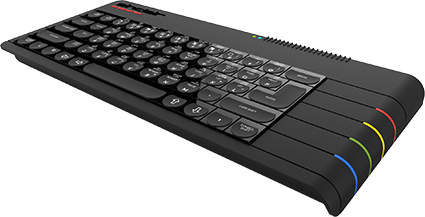

What's New
A short summary of what's changed on the archive since the 2026 reboot went online, newest first. If you've been here before, this is the quickest way to see what's been added, fixed or fiddled with since your last visit.
The early months are pieced together from the project's history on GitHub, so they're a summary rather than every last typo fix.
October 2026
• Added popup descriptions for all bookmarks, and added a few new ones
• Removed some people's names for GDPR purposes.
• Size adjustment to the RAZE emulator window. In some browsers (Vivaldi) it would open too small and cut off some control buttons.
• New
Find a Game page: search every review by title or publisher, filter by year, publisher and section, or sort by score for a chart of the highest rated games.
• New
Random Game link in the top menu. Can't decide what to play? Let the Speccy choose.
• Shareable links: the address bar now shows the page you're actually reading, so any review can be bookmarked or sent to a friend.
• Pages opened on their own (from a search engine or an old bookmark) now load inside the archive, menus and all.
• "Go Back" now takes you somewhere sensible even when you arrived from a shared link.
• A brand new 404 page. Mistype an address and you'll get an R Web loading error courtesy of 48K BASIC!
• Added this What's New page.
• Every screenshot on the game review pages can now be clicked to enlarge it. Press Esc or click again to go back.
• Bookmarks tidied up, plus the usual typo corrections.
September 2026
• RAZE emulator updated to version 2.2, with built-in POKE support. Infinite lives are now just a click away.
• Every game review page now links to the magazine issue the review came from.
• Added links to the
original 2003 site, for anyone curious about where it all began.
• RAZE updated to version 2.1, and the default joystick settings fine-tuned.
• Page descriptions added to help search engines find the archive.
• Behind the scenes: the site moved into its own folder, giving the GitHub project a much tidier home.
August 2026
• The archive got its own domain name: zxsa.co.uk.
• Games now play right in your browser, using the RAZE emulator.
• RAZE 2.0 arrived at the end of the month, so every game on the site now loads in the browser, including +3 disk and ROM cartridge games. Kempston is the default joystick.
• Mobile friendly at last: game pages, menus and the emulator all reworked for phones, including an on-screen keyboard and joypad.
• Links added throughout the main pages, both within the archive and out to other Spectrum sites.
• Added the story of Jet Set Willy's infamous
Attic Bug.
• Spelling corrections throughout the game instructions, with some replaced by the original PDFs.
• Spotted a problem? You can now report it through
GitHub issues.
July 2026
• A big visual overhaul: the whole site restyled with modern CSS for a cleaner, more modern look (with a Web 1.0 heart).
• Every game review page reformatted to match the rest of the site's CSS.
• The creaky old framesets finally replaced with modern iframes.
• Game instructions converted from plain text files into proper web pages.
• 128K versions added for a few games.
• Credits added to the Golden Years pages.
• The site got a touch wider, and links got a hover glow.
June 2026
• Added a section on the
Sinclair QL.
• Animated GIF screen shots added to a number of pages.
• Every page converted to UTF-8, after a brief and ill-advised return to Windows-1252.
• All file names switched to lower case, so links behave on GitHub's fussier servers.
• Image sizes and proportions corrected across the review pages, CRASH Smash logo included.
• Robbie, one of the GIF Elders, finally got his bug spray can.
May 2026
• Game instructions added to every game review page.
• Missing game reviews added.
• POKEs added for games, for those who like a bit of help.
• Information added on all the new kit available for our beloved Speccy.
• Further reading sections updated, and the GIF Elders shuffled into new positions.
• Lots and lots of typos fixed.
April 2026
• 27 April 2026: the 2026 reboot went online, 23 years after the original was abandoned.